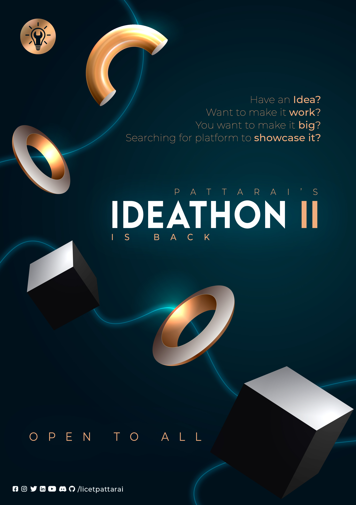
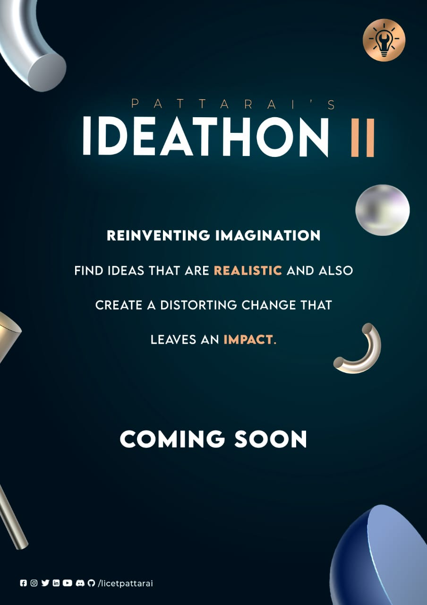
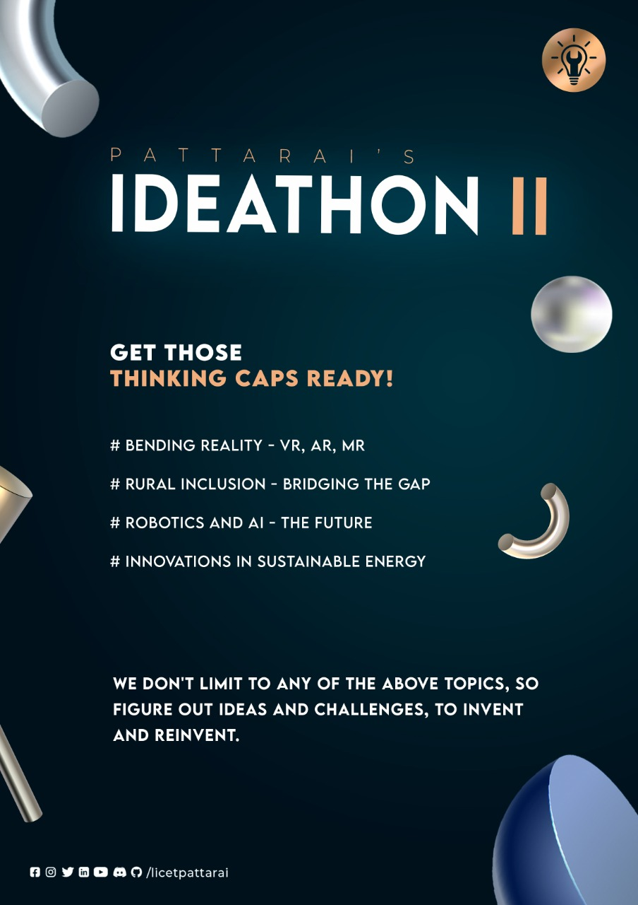
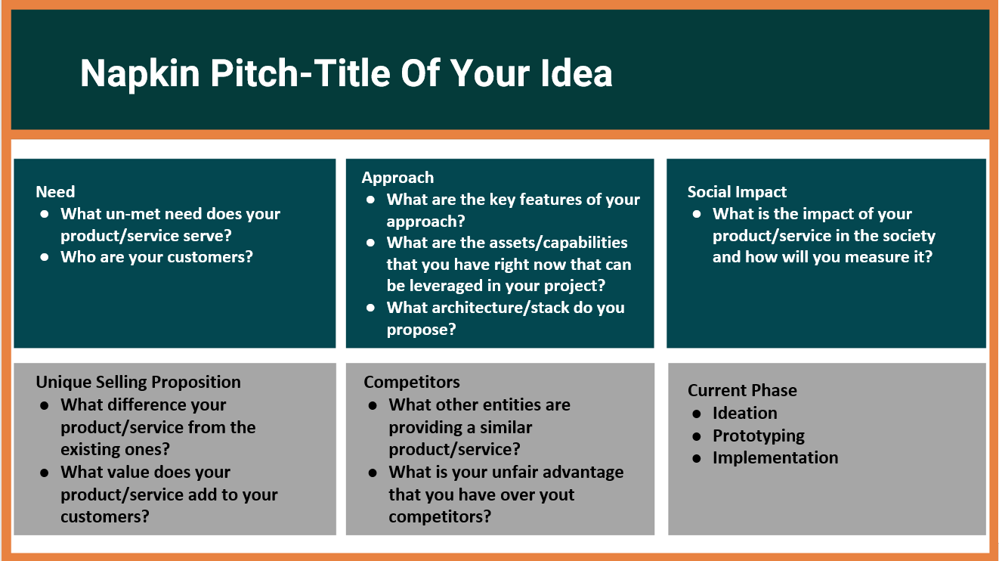

-

Time to Wear your Thinking Caps!
Imaginate. Ideate. Innovate.
Pattarai is back with the platform for REINVENTING IMAGINATIONS of every imaginators out there. Find a problem, Come up with an impacting idea, Leave your mark!
ABOUT IDEATHON
Almost a year back we initiated the launch of PATTARAI with an Ideathon for our freshers. Since then we have come a long way... Technical events play a major role in shaping the minds of engineering students and giving them a great platform. We have been providing a lot of great opportunities for the students from licet, we felt now can be the right time to have an inter-college Ideathon. The topic we have chosen for this year’s Ideathon is “Reinventing Imagination”. We are hoping to receive ideas that are realistic and also create a warping change that leaves an impact. We aim to break boundaries and the technical stigma that students assume.
   -
GUIDELINES
TEAM SIZE
A team can consists of minimum one and maximum of four members.
TEAM MEMBERS
A team can comprise members from any department of any college.
Inter-College teams are also allowed!
PLAGIARISM
Plagiarism will not be tolerated. You can make changes and improvise to an already existing idea
NUMBER OF IDEAS
You are allowed to submit more than one idea. -
Bending reality with VR AR MR and AI
Here is the tech- stack of the future. Use your idea engines to come up with solutions to solve problems faced by the common man. Let say that the equipment and materials used to make an AR based device or an application is expensive, innovate a way to find alternatives or bring down the cost. Many of the smartphones do not possess the capability of feeling the external camera in real time come up with an idea to make this possible. The problem statements are not limited to these example you can come up with your own statements and innovating the existing technology
Bridging the technological gap in rural areas
The issue of the “digital divide”, the technological gap between the “haves” and the “have nots”, has been identified as a potential contributor to the widening income gap both within and among countries for about 20 years now.find ways to fix existing solutions which have their their fair contribution of disadvantages for example Connecting farmers to the global market or in-expensive ways to introduce drones or Iot in agriculture. As this topic suggests you must focus on creating a tech ecosystem which benefits the rural side.The problem statements are not limited to these example you can come up with your own Pain points or innovating the existing technology
Robotics the future
As we all are moving towards the growth of technology. There are many innovations and inventions that will change the future. But there are a lot of problems when it comes to implementation and the cost. So find ways of implementing or making improvement in the existing innovations. You are allowed to bring your own idea
Innovations on renewable energy
Carbon dioxide is in the air!!!. Come up with solutions to make renewable energy more efficient. Even making a small change can impact the phase of the earth. Let's take a solar power plan,the efficiency has not reached its full capacity. Do you know renewable energy still generates pollution you can find ways controlling this factor The problem statements are not limited to these example you can come up with your own Pain points or innovating the existing technology
Innovation free for all
We are not compelling you to stick to a certain topic or domain. You can bring out your own ideas and innovation. At the end of the day it must be your original idea or improved from an existing one. It can solve a problem locally or a global crisis happy thinking!!!!Have a look at the Napkin Pitch
× -